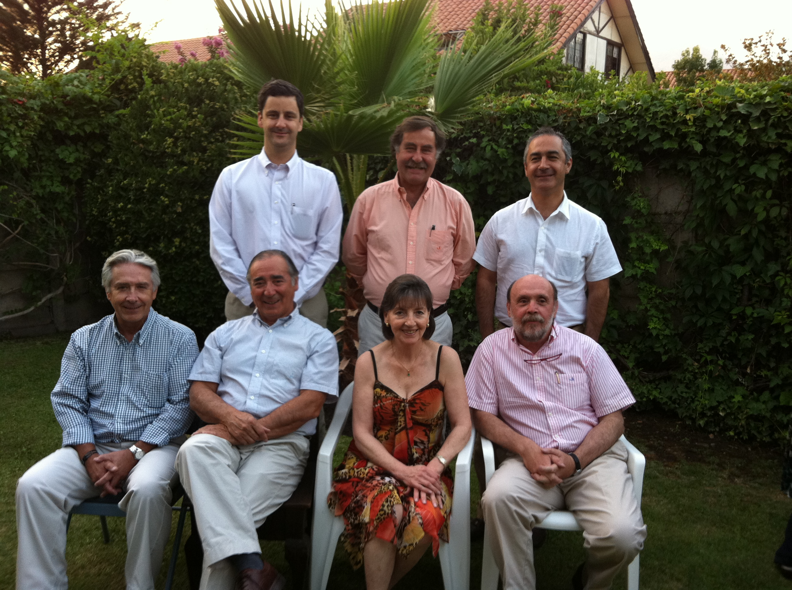
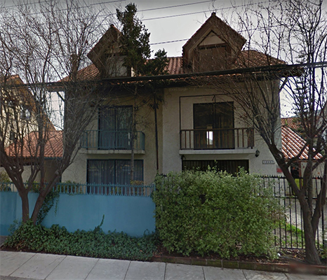

Nuestro Objetivo
La Fundación Niño y Cáncer es una entidad sin fines de lucro que nació para ser un importante apoyo en el tratamiento integral de los niños con cáncer o leucemia atendidos en el Sistema Público del país (Plan AUGE y GES) mejorando su calidad de vida y fortaleciendo su integración social y familiar.
Sus objetivos principales son:
Apoyar el tratamiento de la enfermedad
Generamos espacios de recreación y mejoramos la calidad de vida del niño durante y después de su tratamiento
Rehabilitamos al niño tratado y posteriormente lo integramos a la sociedad (Becas de Estudios)
Damos apoyo social y solidario a la familia del niño (Departamentos de Acogida, almuerzo para padres de niños hospitalizados, Cenas de Navidad, etc.)
Necesitamos la colaboración solidaria de la comunidad, para lograr transformar la cara triste de la enfermedad en una cara feliz con esperanzas para estos pequeños que luchan día a día por su vida.

ORGANIZACIÓN DE LA
FUNDACIÓN NIÑO Y CÁNCER.
Este consejo sobre la base de un conocimiento técnico acabado de la enfermedad a nivel nacional e internacional, dan las líneas generales del trabajo de la Fundación
Está integrado por un grupo de profesionales y empresarios de reconocida trayectoria, cuyo principal objetivo es la obtención de recursos para los distintos proyectos.
El Voluntariado Hospitalario en Santiago
Está a cargo de la Presidenta Sra. Soledad Morales.
Este voluntariado trabaja en el Hospital Luis Calvo Mackenna. Su objetivo es acoger a los padres e hijos, brindándoles apoyo y acompañamiento. Las voluntarias informan a los padres cual es la misión que cumplen con los niños del hospital además de difundir los beneficios entregados a todos los niños por la Fundación Niño y Cáncer, tales como: Cena de navidad, Taller de Ski para niños amputados, Encuentro con la Montaña para niños en seguimiento, Campeonato de Futbolito y Porristas.
